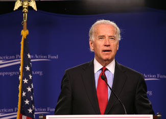

The White House announced on Tuesday that the U.S. Department of Energy (DOE) and other federal agencies have committed to new agency partnerships that will help encourage job growth for a new green economy.
The DOE is responsible for distributing much of the clean energy funding included in the American Recovery and Reinvestment Act, so the agency has agreed to notify the Department of Labor as funding commitments are made and jobs are created. The Department of Labor will, in turn, provide that information to local One-Stop Employment Centers, which will connect unemployed workers with jobs, training and education opportunities, while the Department of Education will help identify the educational resources needed for worker training.
The DOE will also work with the departments of Education and Labor to help create career development opportunities in the fields of energy efficiency and renewable energy. In addition, the DOE will conduct outreach to employers and industry-related organizations to help the departments of Education and Labor identify standards, assessments, best practices, accreditations and certifications needed for careers in the energy sector. The three agencies signed a Memorandum of Understanding to formalize the agreement.
The Labor Department also announced plans to release $500 million from the Recovery Act for grants that will help prepare workers for careers in the energy efficiency and renewable energy sectors. The grants will help underserved communities, including $50 million to assist communities affected by restructuring in the auto industry. The Labor Department expects to open the grant competition in June, with the first round of applications due in late summer. In addition, the Labor Department will work with the U.S. Department of Housing and Urban Development (HUD) to bring green jobs training and employment to public housing residents.
All the green job announcements were made at a meeting of the Middle Class Task Force in Denver. At that meeting, Vice President Joe Biden called on the White House Council for Environmental Quality (CEQ) to prepare proposals to expand green job opportunities and energy savings for the middle class, building on the foundation laid in the Recovery Act.
The Obama Administration wants to identify and advance policies that will facilitate the continued growth of the U.S. energy efficiency sector, powered by private funds. The CEQ has three months to prepare its report. To that end, the CEQ will also head up a “Recovery through Retrofit” Interagency Working Group, which will include DOE, HUD, the General Services Administration, and the departments of Labor, Education and Treasury. The White House Office of Energy & Climate Change, the Office of the Vice President, and the Domestic Policy Council will also participate in the working group.
|
 CENTER FOR AMERICAN PROGRESS ACTION FUND/FLICKR The new green job announcements were made at a meeting of the Middle Class Task Force in Denver, where Vice President Joe Biden called for expanded green job opportunities and energy savings for the middle class. |
|
|